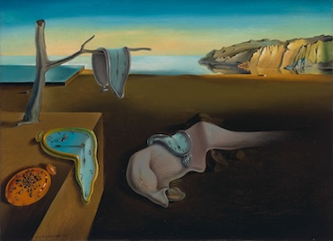

The Persistence of Memory
Salvador Dalí · 1931 · Oil on canvas · Museum of Modern Art, New York
In copyright. Small image shown under fair use, for reference and commentary.
The canvas is small, 24 by 33 centimetres. It was first exhibited at the Julien Levy Gallery in 1932 and sold for $250. Two years later, in 1934, an anonymous donor gave it to the Museum of Modern Art in New York, where it has stayed. Salvador Dalí said the soft watches came from the sight of a Camembert melting in the sun and not from the theory of relativity. The rocks on the right are the tip of the Cap de Creus peninsula in north-eastern Catalonia.